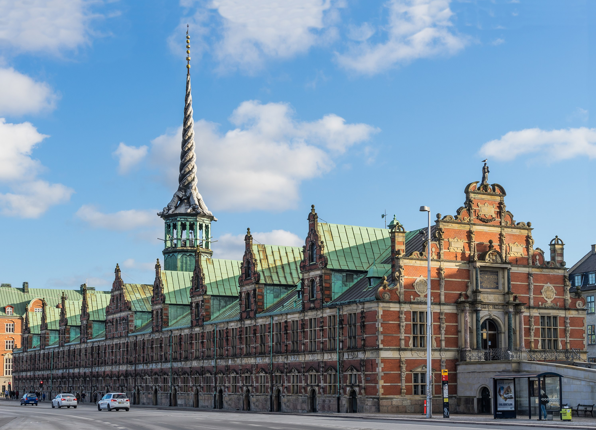
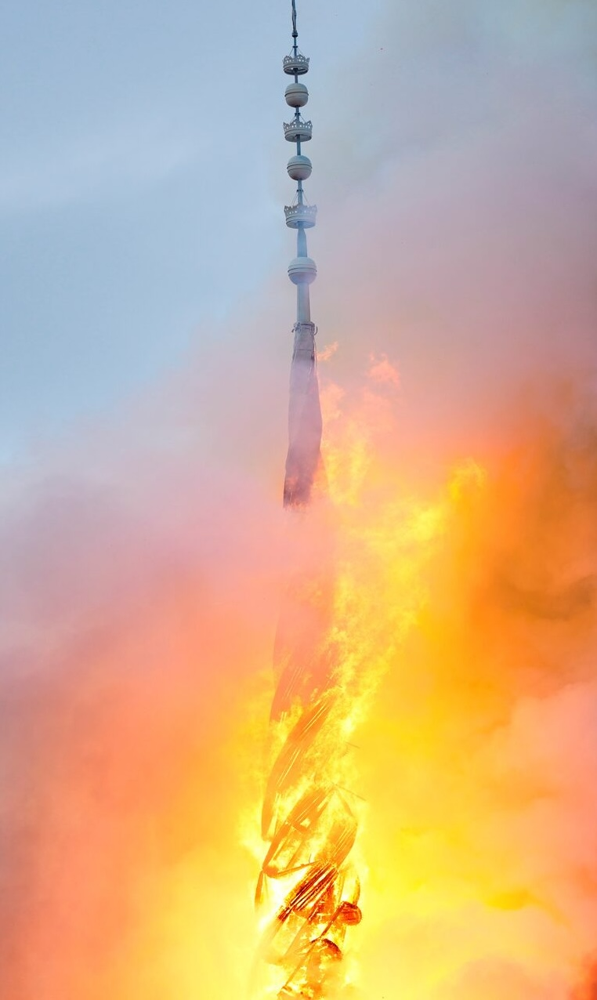
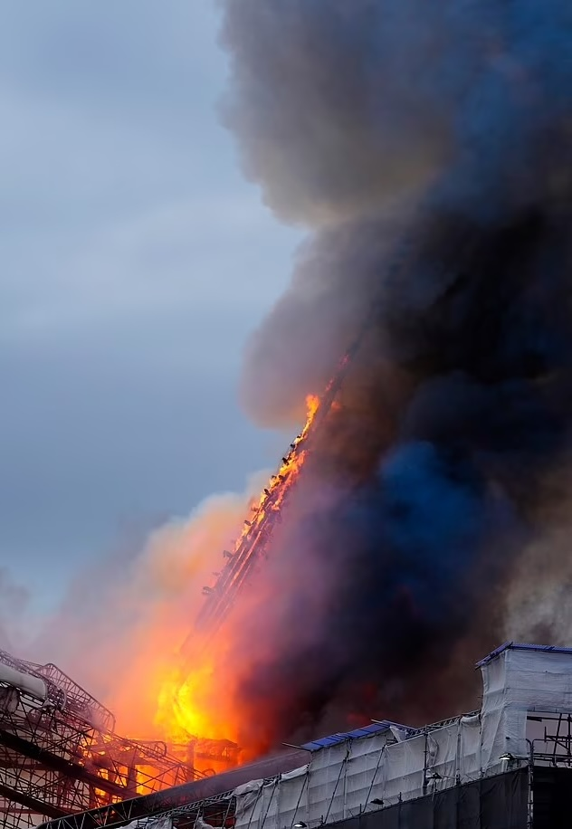
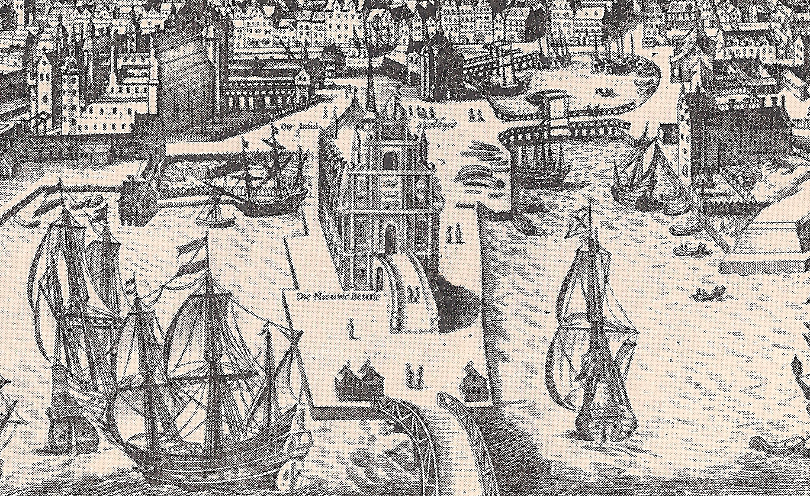
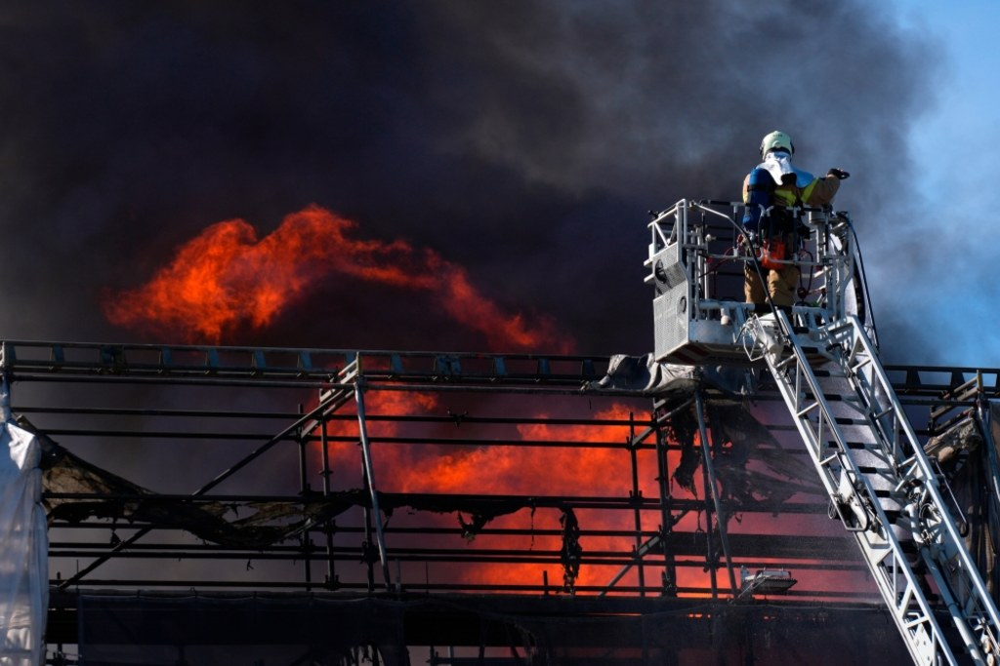

Abstract
This thesis explores the cultural, historical and architectural significance of Børsen, the iconic stock exchange building in Copenhagen, Denmark, and its profound role in the collective memory of the Danish people. Through my personal connection with the building and the emotional impact of the tragic fire in April 2024, I will research the different ways in which the architectural evolution of Børsen reflects the cultural and historical identity of Denmark. The research is also delves into the restoration efforts following the fire, examining the challenges of the preservation of authenticity while integrating modern technology. Using the 2024 fire at Børsen as a case study, this research poses the question, of whether historical buildings should be reconstructed or not, and to what extent should they be replicated to maintain their legacy.
Introduction
I grew up in Copenhagen, the capital of Denmark, surrounded by its rich architecture dating from historic to contemporary buildings. Daoust Design, “Danish Architecture: A Bold Blend of History and Innovation,” accessed February 23, 2025, https://daoustdesign.ca/en/journal/danish-architecture-bold-blend-history-and-innovation. There was always this one specific building I was emotionally attached to, the old stock market, Børsen. I had the chance to visit its interior as a child. This building stood out as a centerpiece in the heart of Denmark, with its Dutch architecture style, green roof, and dragon spire.
My wish is to investigate the relationship we have with historical buildings, diving into the history that lies behind the rise and fall of this iconic building of my home country. On the 16th of April 2024, I saw a horrible sight on a friend’s Instagram story. The most beautiful building of Denmark had caught fire. A big part of our cultural heritage was lost on that day. More than half of the building and most importantly the spire collapsed. What can we learn from cases like the burning of Børsen, should historical buildings be reconstructed, and to what extent?
 View of Børsen with its spire in the center in 2016
Inferno
The fire at Børsen evoked the same shock and sorrow as the burning of Notre-Dame in Paris. As the flames took hold early in the morning, the city was already awake—people biking, driving, and walking to work.
BBC News. (2022, October 18). Headline of the article. BBC News. https://www.bbc.com/news/world-eu-rope-68848772.

A view of the Old Stock Exchange’s “twisted dragons on spire”
during a fire at the Boersen, in Copenhagen, Denmark April 16,
2024. Ritzau Scanpix/Ida Marie Odgaard/via REUTERS Pur-
chase Licensing Rights
But as thick gray smoke grew into the sky and the inferno revealed itself, crowds gathered in disbelief, watching as centuries of history were consumed by fire. Firefighters fought desperately to control the blaze, drawing water from the nearby canal, while civilians rushed to help in any way they could.
MTAB. (2024, March 19). Safeguarding cultural heritage during the Copenhagen Stock Exchange fire. MTAB. https://mtab.eu/nyheter/safeguarding-cultural-heritage-during-the-copenhagen-stock-exchange-fire/.
The wind fanned the flames, wrapping them ever tighter around the historic structure. Inside, priceless artifacts were at risk, including P.S. Krøyer’s Fra Københavns Børs,
“Kulturmonitor,” Historisk P.S. Krøyer maleri reddes ud fra brændende Børsen, accessed March 19, 2025,
https://kulturmonitor.dk/kulturarv/art9859411/Historisk-P.S.-Kr%C3%B8yer-maleri-reddes-ud-fra-br%C3%A6ndende-
B%C3%B8rsen.
depicting 50 influential Danish businessmen within the very walls now burning. Miraculously, many of these large-scale paintings were saved, with haunting images emerging of people carrying them to safety, the collapsing building appearingappearing behind them.
At 8:31 AM, the spire—one of Børsen’s most iconic features—crashed down in a devastating moment. Soldiers of the Royal Guard had already been deployed to ensure public safety and assist in the rescue efforts. Across Denmark, the fire was met with horror. “400 years of culture going up in flames,”
Daily Mail, “Copenhagen Stock Exchange Fire: Historical Paintings Carried Out,” Daily Mail, accessed March 19, 2025, https://www.dailymail.co.uk/news/article-13316063/copenhagen-stock-exchange-fire-historical-paintings-car-ried-out.html.
lamented citizens and officials alike. Louise Schack Elholm of the Liberal Party called the fire a national klenodie, a rare historical treasure of deep symbolic value. Defense Minister Troels Lund Poulsen described it as Denmark’s “Notre Dame moment”
The Art Newspaper. “It’s Our Notre-Dame Moment: Politicians and Passers-By Rescue Paintings from Blazing Boersen Building in Copenhagen.” The Art Newspaper, April 16, 2024. https://www.theartnewspaper.com/2024/04/16/its-
our-notre-dame-moment-politicians-and-passers-by-rescue-paintings-from-blazing-boersen-building-in-copenhagen.
—a tragic parallel to the Parisian cathedral’s destruction, which had occurred almost exactly five years earlier.
Brian Mikkelsen, CEO of the Danish Chamber of Commerce, echoed the nation’s grief: “We have lost our cultural heritage. It’s a huge disaster. It’s one of the most important buildings in Denmark, and we were in the middle of restoring it, so that it could shine, to show what it has meant for Danish business for 400 years.” BT, “Brian Mikkelsen Knust Over Børsen Brand: ‘Det Er En National Katastrofe,’” accessed February 23, 2025, https://www.bt.dk/samfund/brian-mikkelsen-knust-over-boersen-brand-det-er-en-national-katastrofe.
Ironically, the fire broke out while Børsen was undergoing long-overdue renovations. The restoration, announced in 2020 to mark the building’s 400th anniversary, aimed to preserve its historic integrity while addressing structural issues. The roof—made of copper that had oxidized for 140 years—was to be replaced, the brickwork restored, and the sandstone elements carefully repaired. The façade’s original sandstone decorations had long since deteriorated, replaced by plaster copies due to a flaw introduced in an earlier renovation. In 1883, modern waterproof bricks had been used, preventing the building from “breathing.” This unintended consequence forced moisture into the delicate sandstone, accelerating its decay. Toft Kobber, “Renoveringsmagasinet,” accessed February 23, 2025, https://toftkobber.dk/wp-content/uploads/2024/03/Renoveringsmagasinet.pdf
The same features that made Børsen architecturally remarkable also made it vulnerable to fire. Its interior, largely constructed of wood, became a furnacefurnace once the flames took hold. With the copper roof trapping heat inside, the fire raged uncontrollably, turning the building into an inferno. “Everything inside the building is fragile and made from wood. It’s like having an oven going with a fire inside,” experts later explained, shedding light on why the blaze became so intense so quickly. VIDEO Børsen 2024, YouTube, uploaded by Bygge-bloggen.dk, 29 sept. 2024. https://www.youtube.com/watch?v=FAHIGRoc73Q.
Now, in the aftermath, a pressing question remains: What comes next? Will Børsen be rebuilt as a faithful replica, or will its reconstruction embrace the idea of transformation rather than replication?
In order to understand the context of the fire and its aftermath I interviewed Anna Gertrude Kampmann, an architect working on saving Børsen. We discussed the challenges and considerations involved in the restoration of the Børsen. 13 February 2025 (10 months after the fire).

Flames and smoke rise from the Dragon Spire of the Stock
Exchange on fire in Copenhagen, Denmark, April 16, 2024.
Ritzau Scanpix/Ida Marie Odgaard/via REUTERS Purchase
Licensing Rights
Could you describe your role in the rebuilding process of the building?
I’m working on the project as a part 3 architect.
American Institute of Architects (AIA), “Definition of Architectural Positions,” accessed February 23, 2025,https://www.aia.org/resource-center/definition-of-architectural-positions.
So far I have been in charge of saving as much as possible of the original material from the eastern part of
the building. Parallel to this I am working with the vision for the project and the more theoretical part about how to rebuild after the fire.
What challenges or unique considerations come with working on a historic building like the old stock market?
There are many challenges, but the most important and difficult ones will be how to rebuild the building for future generations without it feeling “fake”. The
technical challenges are the other great question. With todays climate crisis and requirements for technical spec, it’s a great challenge to design the building
so it doesn’t show.
How does copper as a material contribute to both the aesthetics and the longevity of the structure?
Copper gets more beautiful with age. With good solid materials age becomes an advantage. The building only becomes more beautiful with age.
For the rebuilt structure, are there efforts to recreate the previous patina, or will the roof be left to develop its own naturally over time?
The heritage authorities in Denmark doesn’t support replicating patina. So, the roof will be let to develop its own. Maybe that’s also more interesting in the
end – as it is more truthful to the era the roof is built in.
Are there any modern methods or technologies being used in the rebuilding that differ from the original construction?
Yes. But we have only just started making these choices. At the moment we are looking at how the trees for the new roof structure will be cut. Where there are
advantages, such as architectural features, we strive to use the original methods.
How do you balance maintaining the authenticity of the original design while incorporating contemporary techniques or materials?
Very good question, I think it’s about being honest and transparent when you introduce something new, but making sure the materials and forms coexist in beauty and uplift each other. The basis for these choices lies in the strategy for the restoration which we are working on, at the moment. This is a report in which you, in words and images, describe how to approach different challenges – and should work as a tool throughout the process making sure the end result is a well curated
new whole.
Has the fire influenced the way you approach rebuilding or preserving the building?
Yes, absolutely. When so much original material is gone, it opens up a huge pile of questions. It’s simply not possible to recreate most of the things as we don’t have the information required. So what do you do then?
Do you think the new roof will resonate with the public in the same way the old one did?
Probably not! We all love the green roofs of Copenhagen. But also, we are used to them being renewed. Just have a look at Christiansborg, Frederiksborg etc. It’s
better for the building, so I guess people prefer that the building doesn’t suffer.
How do you see the rebuilding of the roof contributing to the continued legacy of the stock market?
It’s a question of preservation. Making sure the next generations have a building that doesn’t crumble. Originally the roof was lead. The copper roof is from the later 1800. So even though the population of Copenhagen probably see it at original and has feelings attached to it, reality is that it’s not very old and not original.
Could you describe any challenges you’ve faced in those tasks, particularly when working with copper?
The craftmanship. The biggest challenge has been that the number of craftsmen able to work with copper at this level is very few. So, to be able to build and meet a deadline and it not being too expensive is challenging!
Are there any historical techniques you’ve studied or adopted during this project?
All of the used techniques are rooted in historical techniques. In the making of masonry, woodwork, copper roofing, mortar and bricks! And more to be added to the list in the near future!
How does your work honor the building’s original craftsmanship?
The fact is that actually a lot of the original material of the building didn’t exist anymore..And a lot had been changed over the time. So the building wasn’t in a very “original” condition before the fire. We are very much looking at the parts that are left from the 1600 which are still in place.
How long do you estimate it will take for the new copper roof to develop the rich patina we had before the fire?
It probably won’t. That green color is almost impossible to get again because we don’t have acid rain in the atmosphere (which is a good thing for our health though..).
What is the process of removing the patinated roof? Do you clean the patina off the copper, or put new copper plates? What do you do with the old copper plates?
Actually, the copper is melted and then re-used on the roof!
Do you see the new roof as a chance to reintroduce the building to a new generation, or does it mainly serve to restore what was lost?
It’s an inevitable part of taking care of the building and making sure it survives and serves future generations. As previously described, understanding what actually original material is and what isn’t and the technical issues with the building are essential in terms of understanding how its best preserved for the future. A good example is the brick cladding on the façade, which is late 1800, and not renaissance.
---------
Here, we come to a crucial realization: preserving a listed building while addressing its structural challenges is a delicate balance. One of Børsen’s greatest difficulties, for example, has been moisture damage—an issue that must be resolved without compromising its historical integrity.
The state’s decision not to artificially replicate the patina is reassuring. Børsen’s distinctive green hue was not the result of design but rather a natural process—140 years of oxidation shaped by exposure to the elements, including acidic rain, which no longer exists in the same way. The building’s patina was a testament to time itself, a visual marker of history unfolding. In this way, Børsen embodied the idea that aging adds both value and beauty. Good things come with time.
For generations, people experienced Børsen in its full grandeur, a living reminder of history’s passage. Now, as the building undergoes reconstruction, those responsible must honor Christian IV’s legacy while also acknowledging the fire of 2024 as part of its story. The reconstruction is not just about restoring the past—it is about leaving new traces for the future. Even King Frederik X has contributed to this idea by placing a symbolic foundation stone, enclosing a time capsule describing Denmark in 2024. Hovedstadshistorie.dk, “Børsen,” accessed February 23, 2025, https://www.hovedstadshistorie.dk/slotsholmen/boersen/.
Yet, rebuilding presents its own challenges. The craftsmanship of copperwork today is not at the level it was centuries ago, making an exact reconstruction both technically and financially demanding. As the professional team works to restore Børsen, they do so with a dual purpose: respecting its past while ensuring its future. As stated in the official restoration vision, “The stock exchange is being restored with respect for the past and visions for the future.” Toft Kobber, “Renoveringsmagasinet,” accessed February 23, 2025, https://toftkobber.dk/wp-content/uploads/2024/03/Renoveringsmagasinet.pdf. The ultimate goal is longevity—preserving Børsen’s essence while adapting it to stand the test of time.
Børsen
To fully grasp why the fire was so devastating for the Danish people, it is essential to explore the historical significance of Børsen and its lasting impact.

A visit to the Børsen Stock Exchange in Copenhagen. Source: Scandiculture
Construction of the old stock exchange began in 1619 and was completed in 1623. Its materials reflected Denmark’s far-reaching trade networks—marble from Tuscany, sandstone and timber from Sweden, and bricks from Holland. Christian IV, who ruled from 1588 to 1648, envisioned Børsen as a way to strengthen Denmark’s position in international trade and commerce. From his nearby castle, he personally oversaw its construction, monitoring the progress brick by brick.
In the early 17th century, Christian IV’s ambitious foreign policy sought to expand Denmark’s influence and secure access to valuable resources such as gold and spices from India. In 1616, he established the Danish East India Company and launched an expedition to the Indian subcontinent. By 1620, Denmark had secured a treaty granting control over Tranquebar, a village on the southeastern coast of India, marking the beginning of Denmark’s colonial presence in the region.
The king’s grand architectural projects, including Børsen, were largely funded by these ventures—profits from the East India Company, revenues from Tranquebar, and income from his royal estates.
Dansk Erhverv, “Kongens Vision for Børsen,” accessed February 23, 2025, https://www.danskerhverv.dk/kampagner/sammen-om-borsen/rundt-om-borsen/kongens-vision-for-borsen/?utm_
However, by the end of his reign, financial difficulties forced Christian IV to mortgage Børsen, a stark contrast to the prosperity it was originally built to symbolize.
Hovedstadshistorie.dk, “Børsen,” accessed February 23, 2025, https://www.hovedstadshistorie.dk/slotsholmen/boersen/.
Inside the walls
Originally, the ground and first floors of Børsen functioned as a animatedanimated marketplace, with trade stalls lining its halls. In 1855, the building was purchased by the Grosserer Society, marking a turning point in its history. This acquisition led to Børsen becoming the first listed building in Denmark and possibly the first commodity exchange in Europe.
“Kulturmonitor.” Historisk P.S. Krøyer maleri reddes ud fra brændende Børsen. Accessed March 20, 2025. https://kulturmonitor.dk/kulturarv/art9859411/Historisk-P.S.-Kr%C3%B8yer-maleri-reddes-ud-fra-br%C3%A6ndendeB%C3%B8rsen.

A fire rages through the 17th-century Old Stock Exchange in Copenhagen, toppling its iconic spire. Source: Toronto Sun
Over the years, the building underwent several modifications. Architect Harald Conrad Stilling contributed to its interior design, leaving his mark on its evolving structure. In 1918, Børsen became the target of The Storm of Børsen, Spotting History. Børsen. Accessed March 20, 2025. https://www.spottinghistory.com/view/2176/borsen/. an attack by anarchistic homeless individuals—a rare and dramatic episode in its history.
Today, in 2025, Børsen is owned by the Danish Chamber of Commerce,
Dansk Erhverv. Membership and Network. Accessed March 20, 2025. https://www.danskerhverv.dk/Medlemskab-og-netvaerk/engelsk/.
one of Denmark’s largest business and employer organizations. Serving as their headquarters, the building continues to be a central hub for trade, reflecting its long-standing role in Denmark’s economic landscape.
The aesthetics of Børsen
The dragon spire, constructed in 1625, is one of Børsen’s most iconic features. It consists of four dragons with their tails intertwined to form a twisting spire, crowned by three stacked crowns symboliz- ing the three Nordic kingdoms: Denmark, Norway, and Sweden. The spire was originally designed by firework master Ludvig Heldtruder and initially made of lead. However, due to its excessive weight, it was replaced with a wooden structure in 1778. Danish Architecture Center. Børsen: Copenhagen’s Historic Stock Exchange. Accessed March 20, 2025. https:// dac.dk/en/knowledgebase/architecture/boersen-copenhagens-historic-stock-exchange/.
The dragon motif has long been associated with protection, pro- tecting from evil and danger. It is possible that the inspiration for the spire’s design stemmed stemmed from Viking-era symbols or even from Chi- nese traditions, given Heldtruder’s background in fireworks, a craft with deep roots in China, where dragons are considered guardians. For 400 years, the spire stood watch stood watch over the city, protecting Børsen from the wars and fires that raged around it. But in 2024, for the first time, the dragons could not defend the building.
Børsen itself was built in the Dutch Renaissance style. Its original roof was made of lead, but during the Swedish occupation (1658–59), the material was repurposed into cannonballs. Ibid. It was not until the late 19th century that the roof was replaced with the now-famous copper. This period also saw a major renovation of the building’s brickwork. The original bricks were replaced with machine-made ones, a seemingly practical choice at the time. However, these newer bricks were waterproof, preventing natural ventilation. As a result, moisture was forced to pass through the sandstone decorations instead, causing severe damage over time. Ingeniøren. How Børsen Will Be Rebuilt: 800,000 Stones and 125 Kilometres of Wood. Accessed March 20, 2025. https://ing.dk/artikel/how-boersen-will-be-rebuilt-800000-stones-and-125-kilometres-wood.
The building’s façade, composed of brick and enriched enriched with intri- cately sculpted sandstone, holds both historical and aesthetic value. The decorative elements—including caryatids, herms, and expressive sculpted faces—are central to Børsen’s Renaissance character, each figure showcasing a unique expression and masterful craftsmanship. Leif Hansen Arkitekter. Facaderenovering. Accessed March 20, 2025. https://leifhansenarkitekter.dk/projekter/facaderenovering/.
The copper roof, a defining feature of Børsen, has an equally fascinating story. While copper begins as a bright brownish-orange metal, exposure to air triggers a natural transformation—the patina process. Over time, oxidation Corrosionpedia. Patina - Definition. Accessed March 20, 2025. https://www.corrosionpedia.com/definition/1201/patina. gives the metal its distinct green hue, a visual marker of history unfolding. The copper roof, installed around 140 years ago, became an enduring symbol of the building’s age and significance.
Patina is more than just an aesthetic change; it is a process of preservation. As a chemical layer forming on copper surfaces, it acts as a protective shield, ensuring longevity. In this way, patina is deeply symbolic—just as it physically safeguards the structure, it also serves as a metaphor for history itself. It is a visible record of time’s passage, much like nostalgia: both preserve the past while revealing its traces.
Nostalgia
Restorative Nostalgia
Børsen’s reconstruction aligns with what Svetlana Boym describes as restorative nostalgia Boym, Svetlana. Nostalgia. Atlas of Transformation. Accessed March 20, 2025. http://monumenttotransforma- tion.org/atlas-of-transformation/html/n/nostalgia/nostalgia-svetlana-boym.html. —an attempt to revive the past as it once was. In contrast, Boym’s concept of reflective nostalgia embraces change, much like the natural evolution of patina. This distinction is at the heart of the debate surrounding Børsen’s reconstruction. While restorative nostalgia seeks to recreate history in its original form, reflective nostalgia acknowledges that time inevitably alters both materials and meaning. Patina itself serves as a metaphor for this tension: just as oxidation protects copper, memory safeguards cultural identity.
By reconstructing Børsen exactly as it stood in 1620, the Danish Chamber of Commerce aims to honor Christian IV’s original vision. However, true replication is impossible. Over 400 years, architectural knowledge, craftsmanship, and environmental conditions have evolved. One key challenge, as highlighted in interviews, is the decline of traditional copper roofing expertise—today’s artisans no longer possess the same level of skill as their predecessors.
As architectural historian Aldo Rossi observed, “We must be part of historical continuity to give meaning to new forms.” Cité de l’Architecture et du Patrimoine, “Restaurer et bâtir: Viollet-le-Duc au coeur du chantier,” accessed Febru- ary 23, 2025, https://www.citedelarchitecture.fr/fr/video/restaurer-et-batir-viollet-le-duc-au-coeur-du-chantier. This can be understood in multiple ways: history must be studied to avoid repeating mistakes, and we must recognize our past to understand the present. In keeping with this philosophy, the reconstruction effort prioritizes historical materials. The original wood, sourced from Gotland more than 500 years ago, will ideally be procured from the same region, though alternatives from Germany or Denmark may be used. Bricks will be carefully removed, cleaned, and subjected subjected to safety tests before being reintegrated. Even the copper will be melted down and repurposed, ensuring that the remains the remains of the original structure persist.
Børsen was Denmark’s first listed building, and today, nearly 9,000 structures hold the same status. This growing emphasis on preservation reflects a broader cultural need to reclaim and safeguard historical identity. Yet, as the reconstruction progresses, it raises an essential question: should we seek to restore history exactly as it was, or should we allow its layers to remain visible, acknowledging the passage of time?
Reflective Nostalgia / Inevitable Change
Rebuilding a lost past as if time had stood still is an illusion. Following Christian IV’s original architectural plans to the letter is equally unrealistic—400 years of change cannot be erased. This is where Svetlana Boym’s concept of reflective nostalgia becomes relevant: it acknowledges the desire to idealize the past while recognizing that history can never be fully reconstructed.
Børsen’s copper roof, which had developed a rich green patina over 140 years, was a product of time and environmental conditions. Today, the absence of acidic rain—a positive change for human health—means that the same oxidation process will not occur in the same way. As a result, while the form of the roof is being restored, its aging process will follow a different aesthetic trajectory. This highlights a fundamental truth about historical preservation: while we can safeguard history, we can never truly recreate it.
The incorporation of modern fire safety measures further underscores this balance between preservation and adaptation. The reconstruction effort blends elements of restorative nostalgia—a desire to return to the past—with reflective nostalgia—an acceptance of history’s inevitable transformation. In doing so, it becomes not just a reconstruction of a building, but a reflection of how we remember, preserve, and reinterpret the past.
Life Among Ruins
An interesting perspective to consider is the alternative to the typical response following the accidental destruction of historical landmarks like Børsen or Notre Dame. The usual pattern unfolds predictably: widespread international coverage of the dramatic event, followed by collective outrage and sorrow, and then an immediate inundation of funding for reconstruction. In the case of Notre Dame, the response almost seemed like a competition of generosity—who could donate the most? Rébâtir Notre-Dame de Paris. Donors. Accessed March 20, 2025. https://rebatirnotredamedeparis.fr/en/donors.
“It wasn’t long before the euros flowed in {…} to remake the body of the mother: They had not yet extinguished the last of the fire when the state’s coffers counted nearly 850 million euros. Just one of these donations would have been enough to build a safe roof for the homeless of Paris {…} But no, it is better, says the president, to rebuild Notre Dame, if possible within five years, at Olympic speed.” This raises the question: why is there often more immediate concern for rebuilding a monument than for addressing urgent social needs? Paul B. Preciado, “Paul B. Preciado Responds to the Notre-Dame Fire,” Artforum, accessed February 23, 2025, https://www.artforum.com/columns/paul-b-preciado-responds-to-the-notre-dame-fire-243030/.
In his lecture Simon Sheikh, “Life Among The Ruins” Goldsmiths Art, March 13, 2023, https://www.youtube.com/watch?v=HQTKMQL7idw. about Life Among Ruins, Sheikh argues that ruination should not be seen exclusively exclusively as devastation but as a new beginning—an archive of human imprint on the world. He references Paul B. Preciado, who, in his response to the Notre Dame fire, asked: Why should we not have time to mourn? Preciado advocates for allowing ruins to remain visible as a monument of loss, rather than erasing them through rapid restoration. He suggests that destruction can itself be a legacy—an opportunity to reflect on change rather than rushing to reconstruct an idealized past.
This critique is particularly relevant when considering how restoration often prioritizes visual and historical accuracy over recognizing a structure’s ongoing transformation. Preciado argues that monuments should not be frozen symbols of the past but rather dynamic spaces that engage with the present. This idea aligns with the role of patina in architectural preservation—where oxidation marks the passage of time, honoring a building’s history rather than erasing its imperfections. The risk in full-scale restoration is that it erases these material traces of endurance, decay, and change.
Instead of a perfect replica, reconstruction could embrace a more honest approach—one that acknowledges both the building’s history and its destruction. Keeping elements like patina would preserve its authenticity and connection to the present rather than attempting to rewind time. In this way, preservation should focus on lived history rather than an idealized vision of the past, ensuring that historic structures remain relevant through their ongoing transformation.
At the same time, I understand why people are unsettled when the preservation of a building seems to take precedence precedence over human well-being. Seeing how quickly enormous sums of money can be raised for a monument inevitably leads to questions about what else could have been done with those resources.
Despite this, I believe that historical buildings like Børsen, which hold deep cultural significance, should be rebuilt—but with honesty. Rather than striving for a flawless reproduction, the reconstruction should serve as an ode to the original, a thoughtful reinterpretation that respects its past while embracing the realities of the present. While I respect Preciado’s activist perspective, I find the idea of living among ruins unrealistic in practice. Still, his argument challenges us to reconsider how we think about loss, preservation, and the meaning of historical continuity.
Conclusion
The burning of Børsen raises profound questions about preservation and heritage. Patina, with its aesthetic and protective qualities, symbolizes the natural evolution of history—something that a perfect replica can never fully capture. While historical buildings with cultural and national significance should be reconstructed, they should not be exact replicas. Instead, reconstruction should strike a balance between honoring authenticity and addressing modern needs. By blending traditional craftsmanship with contemporary techniques in which we are more skilled, we can create a meaningful fusion that reflects our architectural evolution and preserves the essence of the past while embracing the future.
Preserving buildings like Børsen is not only about safeguarding the physical structure but also about maintaining collective memory and cultural identity. These buildings serve as symbols of a shared history, reflecting both the time in which they were built and the transformations they have undergone. Thus, reconstruction should not be merely a mechanical process of restoring stone and wood, but rather a thoughtful reflection of the current values and realities.
As we navigate urban development and modernity, the preservation of historical structures must coexist with the needs of the present. The evolution of Børsen and similar landmarks should be seen as part of a broader dialogue between past, present, and future, where history is not simply replicated but reinterpreted, allowing these buildings to remain alive and relevant in their ongoing transformation. Ultimately, the effort to reconstruct Børsen with respect to both its history and modern advancements reflects our ongoing commitment to preserving cultural heritage while acknowledging the dynamic nature of architectural legacy.
Bibliography
Richard Hughes & Michael Rowe, The Colouring, Bronzing and Patination of Metals, 1982, Crafts Council
Reuters, “Historic Copenhagen Stock Exchange Engulfed in Flames,” Reuters, 2024
Daoust Design & Daoust Design Inc., Danish Architecture: A Bold Blend of History and Innovation, Daoust Design, (n.d.)
B. P. Kirby, “Historic Copenhagen Stock Exchange in Denmark Goes Up in Flames,” BBC News, April 16, 2024
Contributeurs aux projets Wikimedia, “Børsen,” Wikipedia, December 17, 2024
Reynolds, J., Jewers, C., & Kuepper, M., “‘We’re Going Down, We Have to Get Out!’ Terrifying Moment Builders Caught in Copenhagen Stock Exchange Inferno,” Mail Online, April 19, 2024
Nationalklenodie, “Den Danske Ordbog,” (n.d.)
Meredith, S., “Fire Engulfs Denmark’s Historic Stock Exchange Building, Iconic Spire Collapses,” CNBC, April 16, 2024
Døssing, S., “Brian Mikkelsen Knust Over Børsen-Brand: ‘Det Er En National Katastrofe,’” BT, April 16, 2024
Meredith, S., “Fire Engulfs Denmark’s Historic Stock Exchange Building, Iconic Spire Collapses,” CNBC, April 16, 2024
Wikipedias brugere, “Fra Københavns Børs Rescued April 16th 2024,” Wikipedia, April 16, 2024
Minut for minut, “Sådan Brændte Store Dele af Børsen Ned På en Halv Dag,” Politiken - Den Levende Avis, (n.d.)
Børsens Sandsten, LH Arkitekter, (n.d.)
American Institute of Architects (AIA), “Definition of Architectural Positions,” (n.d.)
Molio Youtube, “Webinar: Få et Unikt Indblik i Børsen-Branden - 27/8 2024,” YouTube, August 28, 2024
Hovedstadshistorie.dk, Børsen, Slotsholmen, Loznica, C., 2024
Børsen - Arkitekturbilleder, (n.d.)
Kongens Vision for Børsen, Dansk Erhverv, (n.d.)
Ben, “Visit Børsen (The Old Stock Exchange) in Copenhagen — Scandi Culture,” Scandi Culture, August 2, 2024
Den Brændte Børsbygning er en Efterligning fra 1800-Tallet, Politiken, April 21, 2024
Arbejdermuseet.dk, “Dagen Stormen På Børsen,” Arbejdermuseet.dk, 2024
Andersen, U., “This Is How Børsen Will Be Rebuilt: 800,000 Stones and 12.5 Kilometres of Wood,” Ingeniøren, August 14, 2024
Wikipedia Contributors, “Copper,” Wikipedia, February 11, 2025
Timeline, Designed and Built by Webalon in London, England, (n.d.)
.
Hornsby, J., The Force of Norms, 1980, PhilPapers.org
Contributeurs aux projets Wikimedia, “Børsen,” Wikipedia, December 17, 2024
Børsens Sandsten, LH Arkitekter, (n.d.-b)
Restaurer et bâtir: Viollet-le-Duc au cœur du chantier, Cité De L’architecture & Du Patrimoine, (n.d.)
Preciado, P. B., “Paul B. Preciado Responds to the Notre-Dame Fire,” Artforum, September 26, 2023
Toftkobber, “References - Toftkobber,” November 12, 2020
BBC News, “Headline of the Article,” October 18, 2022
MTAB, “Safeguarding Cultural Heritage During the Copenhagen Stock Exchange Fire,” March 19, 2024
Kulturmonitor, “Historisk P.S. Krøyer Maleri Reddes Ud Fra Brændende Børsen,” accessed March 19, 2025
Daily Mail, “Copenhagen Stock Exchange Fire: Historical Paintings Carried Out,” Daily Mail, accessed March 19, 2025
BT, “Brian Mikkelsen Knust Over Børsen Brand: ‘Det Er En National Katastrofe,’” accessed February 23, 2025
American Institute of Architects (AIA), “Definition of Architectural Positions,” accessed February 23, 2025
Dansk Erhverv, “Kongens Vision for Børsen,” accessed February 23, 2025
Kulturmonitor, “Historisk P.S. Krøyer Maleri Reddes Ud Fra Brændende Børsen,” accessed March 20, 2025
Spotting History, “Børsen,” accessed March 20, 2025
Dansk Erhverv, “Membership and Network,” accessed March 20, 2025